glm(formula = y ~ x1 + x2 + x3 + ..., family = familyname(link = "linkname"),
data = )Basic Analysis/Useful Packages
Inference/Regression
glm fits a generalized linear model with your choice of family/link function (Gaussian, logit, Poisson, etc.)
- lm is just a standard linear regression (equivalent to glm with family = gaussian(link = “identity”))
The basic glm call looks something like this:
There are a bunch of families and links to use (help(family) for a full list), but some essentials are:
binomial(link = "logit")gaussian(link = "identity")poisson(link = "log")
If you’re using
lm, the call looks the same but without thefamilyargument.Example: suppose we want to regress the life expectency on the GDP per capita and the population, as well as the continent and year. The lm/glm call would be something like this:
reg <- lm(formula = lifeExp ~ log(gdpPercap) + log(pop) + continent + year, data = gapminder)
Regression output
Basic output in an S3 object
# View components contained in the regression output
names(reg) [1] "coefficients" "residuals" "effects" "rank"
[5] "fitted.values" "assign" "qr" "df.residual"
[9] "contrasts" "xlevels" "call" "terms"
[13] "model" # Examine regression coefficients
reg$coefficients (Intercept) log(gdpPercap) log(pop) continentAmericas
-460.8132741 5.0756110 0.1530312 8.7453560
continentAsia continentEurope continentOceania year
6.8254916 12.2808442 12.5398669 0.2377202 # Examine regression degrees of freedom
reg$df.residual[1] 1696# See the standard (diagnostic) plots for a regression
plot(reg)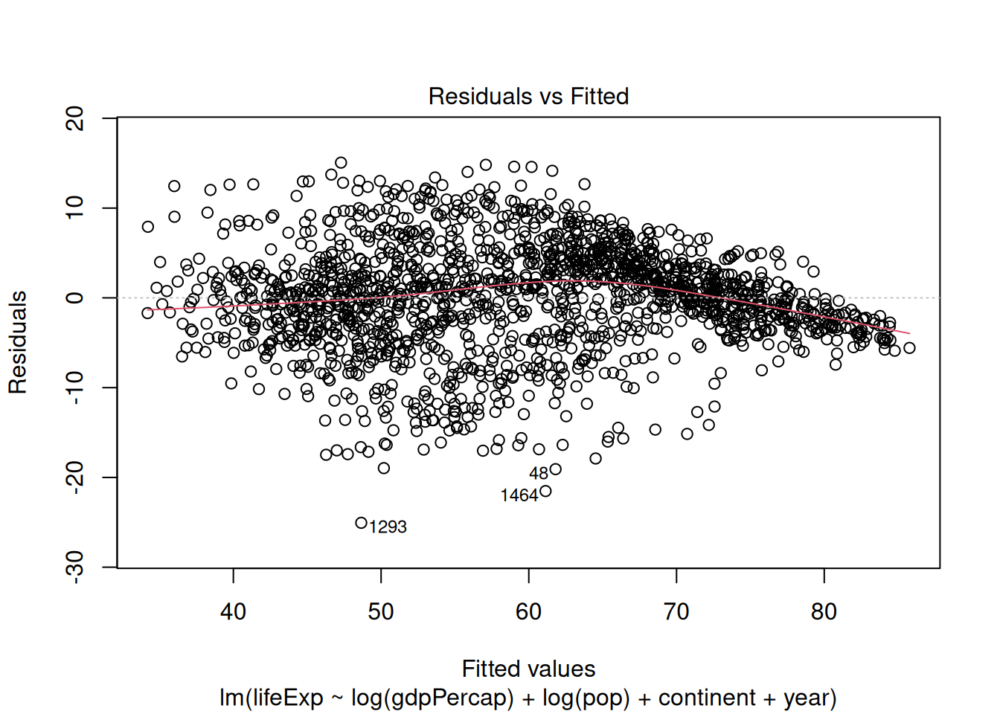
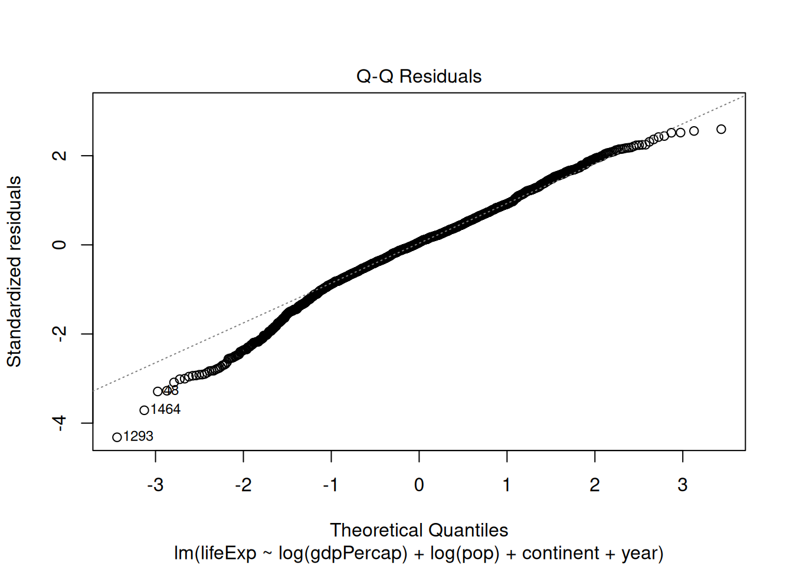
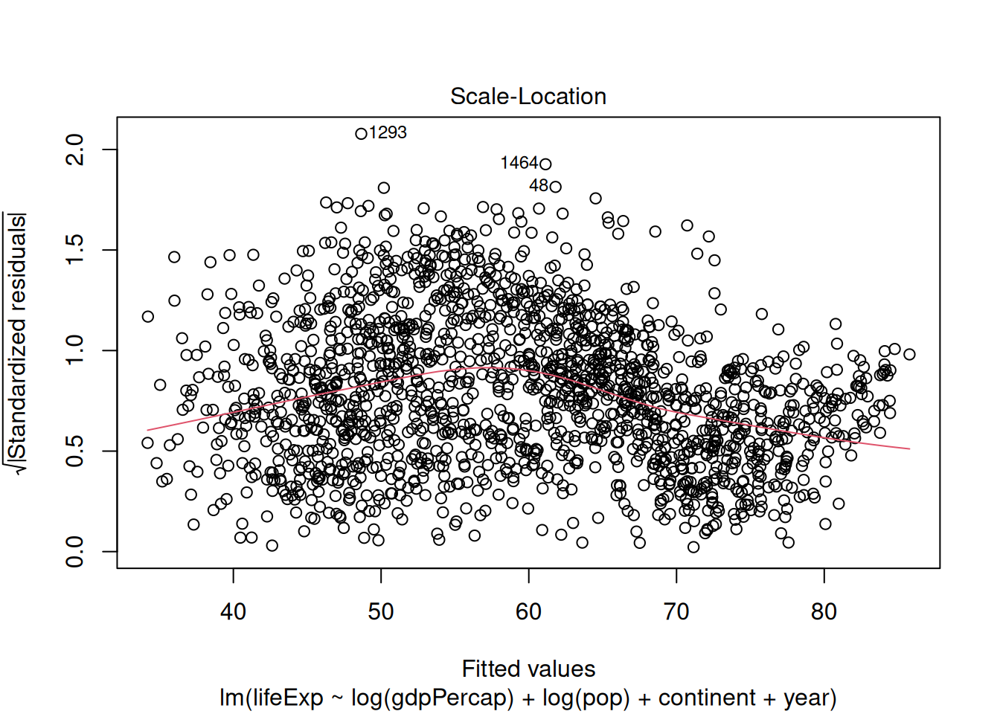
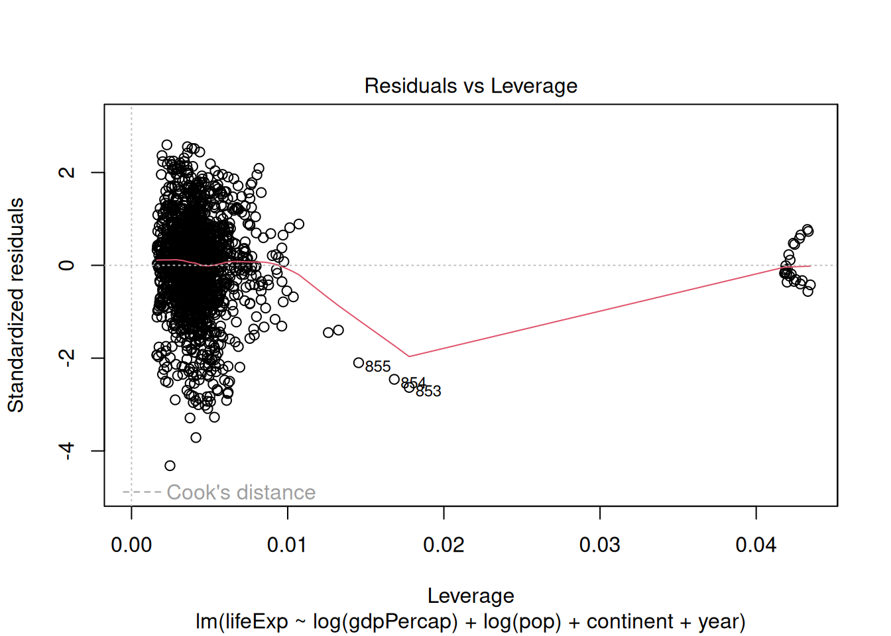
Summary method for regression
summary(reg)
Call:
lm(formula = lifeExp ~ log(gdpPercap) + log(pop) + continent +
year, data = gapminder)
Residuals:
Min 1Q Median 3Q Max
-25.0572 -3.2857 0.3289 3.7062 15.0650
Coefficients:
Estimate Std. Error t value Pr(>|t|)
(Intercept) -4.608e+02 1.697e+01 -27.154 <2e-16 ***
log(gdpPercap) 5.076e+00 1.627e-01 31.191 <2e-16 ***
log(pop) 1.530e-01 9.668e-02 1.583 0.114
continentAmericas 8.745e+00 4.766e-01 18.349 <2e-16 ***
continentAsia 6.825e+00 4.232e-01 16.128 <2e-16 ***
continentEurope 1.228e+01 5.292e-01 23.205 <2e-16 ***
continentOceania 1.254e+01 1.281e+00 9.788 <2e-16 ***
year 2.377e-01 8.932e-03 26.614 <2e-16 ***
---
Signif. codes: 0 '***' 0.001 '**' 0.01 '*' 0.05 '.' 0.1 ' ' 1
Residual standard error: 5.811 on 1696 degrees of freedom
Multiple R-squared: 0.7985, Adjusted R-squared: 0.7976
F-statistic: 960 on 7 and 1696 DF, p-value: < 2.2e-16One can also extract useful things from the summary object
# Store summary method results
summ_reg <- summary(reg)
# View summary method results objects
objects(summ_reg) [1] "adj.r.squared" "aliased" "call" "coefficients"
[5] "cov.unscaled" "df" "fstatistic" "r.squared"
[9] "residuals" "sigma" "terms" # View table of coefficients
summ_reg$coefficients Estimate Std. Error t value Pr(>|t|)
(Intercept) -460.8132741 16.970277820 -27.154138 3.961833e-135
log(gdpPercap) 5.0756110 0.162724177 31.191499 3.371693e-169
log(pop) 0.1530312 0.096677948 1.582897 1.136315e-01
continentAmericas 8.7453560 0.476599244 18.349496 9.605994e-69
continentAsia 6.8254916 0.423203644 16.128149 1.492420e-54
continentEurope 12.2808442 0.529239698 23.204692 1.123344e-103
continentOceania 12.5398669 1.281141831 9.788040 4.798636e-22
year 0.2377202 0.008932106 26.614126 1.058968e-130Note that, in our results, R has broken up our variables into their different factor levels (as it will do whenever your regressors have factor levels)
If your data aren’t factorized, you can tell lm/glm to factorize a variable (i.e. create dummy variables on the fly), e.g.:
glm(formula = y ~ x1 + x2 + factor(x3), family = family(link = "link"),
data = )Setting up regression interactions
There are also some useful shortcuts for regressing on interaction terms:
x1:x2 interacts all terms in x1 with all terms in x2
summary(lm(lifeExp ~ log(gdpPercap) + log(pop) +
continent:factor(year),
data = gapminder))
Call:
lm(formula = lifeExp ~ log(gdpPercap) + log(pop) + continent:factor(year),
data = gapminder)
Residuals:
Min 1Q Median 3Q Max
-26.5678 -2.5530 0.0044 2.9146 15.5667
Coefficients: (1 not defined because of singularities)
Estimate Std. Error t value Pr(>|t|)
(Intercept) 27.18384 4.68490 5.802 7.83e-09 ***
log(gdpPercap) 5.07950 0.16049 31.650 < 2e-16 ***
log(pop) 0.07894 0.09427 0.837 0.402510
continentAfrica:factor(year)1952 -24.14252 4.11250 -5.871 5.25e-09 ***
continentAmericas:factor(year)1952 -16.44650 4.16627 -3.948 8.23e-05 ***
continentAsia:factor(year)1952 -19.33470 4.14083 -4.669 3.27e-06 ***
continentEurope:factor(year)1952 -7.09176 4.13518 -1.715 0.086537 .
continentOceania:factor(year)1952 -6.06350 5.65111 -1.073 0.283440
continentAfrica:factor(year)1957 -22.49637 4.10985 -5.474 5.09e-08 ***
continentAmericas:factor(year)1957 -14.36734 4.16433 -3.450 0.000575 ***
continentAsia:factor(year)1957 -17.17434 4.13753 -4.151 3.48e-05 ***
continentEurope:factor(year)1957 -5.90941 4.13272 -1.430 0.152934
continentOceania:factor(year)1957 -5.62997 5.65034 -0.996 0.319206
continentAfrica:factor(year)1962 -21.01387 4.10690 -5.117 3.47e-07 ***
continentAmericas:factor(year)1962 -12.31354 4.16305 -2.958 0.003143 **
continentAsia:factor(year)1962 -15.56258 4.13513 -3.764 0.000173 ***
continentEurope:factor(year)1962 -5.05421 4.13082 -1.224 0.221302
continentOceania:factor(year)1962 -5.31223 5.64979 -0.940 0.347226
continentAfrica:factor(year)1967 -19.70336 4.10348 -4.802 1.72e-06 ***
continentAmericas:factor(year)1967 -10.93238 4.16129 -2.627 0.008690 **
continentAsia:factor(year)1967 -13.15690 4.13270 -3.184 0.001482 **
continentEurope:factor(year)1967 -4.91343 4.12905 -1.190 0.234232
continentOceania:factor(year)1967 -5.77117 5.64916 -1.022 0.307122
continentAfrica:factor(year)1972 -18.14692 4.10075 -4.425 1.03e-05 ***
continentAmericas:factor(year)1972 -9.65366 4.15954 -2.321 0.020417 *
continentAsia:factor(year)1972 -11.60139 4.12929 -2.810 0.005020 **
continentEurope:factor(year)1972 -4.97628 4.12753 -1.206 0.228133
continentOceania:factor(year)1972 -5.80936 5.64868 -1.028 0.303891
continentAfrica:factor(year)1977 -16.18475 4.09960 -3.948 8.22e-05 ***
continentAmericas:factor(year)1977 -8.33819 4.15801 -2.005 0.045092 *
continentAsia:factor(year)1977 -10.12201 4.12699 -2.453 0.014285 *
continentEurope:factor(year)1977 -4.55230 4.12667 -1.103 0.270128
continentOceania:factor(year)1977 -5.12322 5.64848 -0.907 0.364535
continentAfrica:factor(year)1982 -14.19333 4.09899 -3.463 0.000549 ***
continentAmericas:factor(year)1982 -6.59214 4.15772 -1.586 0.113041
continentAsia:factor(year)1982 -7.60009 4.12571 -1.842 0.065636 .
continentEurope:factor(year)1982 -4.11846 4.12623 -0.998 0.318370
continentOceania:factor(year)1982 -4.05526 5.64827 -0.718 0.472882
continentAfrica:factor(year)1987 -12.18504 4.09947 -2.972 0.002998 **
continentAmericas:factor(year)1987 -4.71568 4.15765 -1.134 0.256870
continentAsia:factor(year)1987 -5.69142 4.12491 -1.380 0.167846
continentEurope:factor(year)1987 -3.72976 4.12583 -0.904 0.366126
continentOceania:factor(year)1987 -3.51642 5.64805 -0.623 0.533640
continentAfrica:factor(year)1992 -11.80275 4.09942 -2.879 0.004039 **
continentAmericas:factor(year)1992 -3.28548 4.15749 -0.790 0.429492
continentAsia:factor(year)1992 -4.38228 4.12405 -1.063 0.288113
continentEurope:factor(year)1992 -2.51508 4.12618 -0.610 0.542249
continentOceania:factor(year)1992 -1.98041 5.64799 -0.351 0.725904
continentAfrica:factor(year)1997 -11.95773 4.09861 -2.918 0.003576 **
continentAmericas:factor(year)1997 -2.16110 4.15661 -0.520 0.603190
continentAsia:factor(year)1997 -3.50157 4.12279 -0.849 0.395826
continentEurope:factor(year)1997 -2.08430 4.12564 -0.505 0.613482
continentOceania:factor(year)1997 -1.44783 5.64778 -0.256 0.797710
continentAfrica:factor(year)2002 -12.52375 4.09722 -3.057 0.002274 **
continentAmericas:factor(year)2002 -0.98980 4.15641 -0.238 0.811804
continentAsia:factor(year)2002 -2.67982 4.12205 -0.650 0.515707
continentEurope:factor(year)2002 -1.57345 4.12518 -0.381 0.702937
continentOceania:factor(year)2002 -0.47345 5.64768 -0.084 0.933201
continentAfrica:factor(year)2007 -11.65685 4.09478 -2.847 0.004472 **
continentAmericas:factor(year)2007 -0.69311 4.15497 -0.167 0.867536
continentAsia:factor(year)2007 -2.20076 4.12023 -0.534 0.593320
continentEurope:factor(year)2007 -1.52841 4.12475 -0.371 0.711024
continentOceania:factor(year)2007 NA NA NA NA
---
Signif. codes: 0 '***' 0.001 '**' 0.01 '*' 0.05 '.' 0.1 ' ' 1
Residual standard error: 5.648 on 1642 degrees of freedom
Multiple R-squared: 0.8157, Adjusted R-squared: 0.8088
F-statistic: 119.1 on 61 and 1642 DF, p-value: < 2.2e-16x1*x2 produces the cross of x1 and x2, or x1+x2+x1:x2
summary(lm(lifeExp ~ log(gdpPercap) + log(pop) + continent*factor(year),
data = gapminder))
Call:
lm(formula = lifeExp ~ log(gdpPercap) + log(pop) + continent *
factor(year), data = gapminder)
Residuals:
Min 1Q Median 3Q Max
-26.5678 -2.5530 0.0044 2.9146 15.5667
Coefficients:
Estimate Std. Error t value Pr(>|t|)
(Intercept) 3.04133 2.07409 1.466 0.142746
log(gdpPercap) 5.07950 0.16049 31.650 < 2e-16 ***
log(pop) 0.07894 0.09427 0.837 0.402510
continentAmericas 7.69602 1.39324 5.524 3.85e-08 ***
continentAsia 4.80781 1.26567 3.799 0.000151 ***
continentEurope 17.05075 1.32948 12.825 < 2e-16 ***
continentOceania 18.07902 4.08899 4.421 1.05e-05 ***
factor(year)1957 1.64615 1.10777 1.486 0.137470
factor(year)1962 3.12865 1.10838 2.823 0.004819 **
factor(year)1967 4.43915 1.10969 4.000 6.61e-05 ***
factor(year)1972 5.99560 1.11134 5.395 7.85e-08 ***
factor(year)1977 7.95776 1.11240 7.154 1.27e-12 ***
factor(year)1982 9.94918 1.11336 8.936 < 2e-16 ***
factor(year)1987 11.95748 1.11375 10.736 < 2e-16 ***
factor(year)1992 12.33976 1.11463 11.071 < 2e-16 ***
factor(year)1997 12.18479 1.11605 10.918 < 2e-16 ***
factor(year)2002 11.61877 1.11805 10.392 < 2e-16 ***
factor(year)2007 12.48567 1.12120 11.136 < 2e-16 ***
continentAmericas:factor(year)1957 0.43301 1.94383 0.223 0.823748
continentAsia:factor(year)1957 0.51422 1.77764 0.289 0.772410
continentEurope:factor(year)1957 -0.46380 1.83127 -0.253 0.800095
continentOceania:factor(year)1957 -1.21261 5.75524 -0.211 0.833150
continentAmericas:factor(year)1962 1.00431 1.94383 0.517 0.605458
continentAsia:factor(year)1962 0.64348 1.77767 0.362 0.717414
continentEurope:factor(year)1962 -1.09110 1.83146 -0.596 0.551422
continentOceania:factor(year)1962 -2.37738 5.75524 -0.413 0.679601
continentAmericas:factor(year)1967 1.07497 1.94383 0.553 0.580329
continentAsia:factor(year)1967 1.73865 1.77767 0.978 0.328194
continentEurope:factor(year)1967 -2.26082 1.83170 -1.234 0.217278
continentOceania:factor(year)1967 -4.14682 5.75524 -0.721 0.471302
continentAmericas:factor(year)1972 0.79724 1.94383 0.410 0.681756
continentAsia:factor(year)1972 1.73772 1.77790 0.977 0.328513
continentEurope:factor(year)1972 -3.88011 1.83221 -2.118 0.034348 *
continentOceania:factor(year)1972 -5.74146 5.75524 -0.998 0.318618
continentAmericas:factor(year)1977 0.15055 1.94389 0.077 0.938277
continentAsia:factor(year)1977 1.25493 1.77837 0.706 0.480498
continentEurope:factor(year)1977 -5.41829 1.83293 -2.956 0.003160 **
continentOceania:factor(year)1977 -7.01748 5.75525 -1.219 0.222899
continentAmericas:factor(year)1982 -0.09483 1.94391 -0.049 0.961100
continentAsia:factor(year)1982 1.78543 1.77884 1.004 0.315670
continentEurope:factor(year)1982 -6.97588 1.83363 -3.804 0.000147 ***
continentOceania:factor(year)1982 -7.94094 5.75529 -1.380 0.167847
continentAmericas:factor(year)1987 -0.22666 1.94400 -0.117 0.907197
continentAsia:factor(year)1987 1.68580 1.77960 0.947 0.343629
continentEurope:factor(year)1987 -8.59548 1.83497 -4.684 3.04e-06 ***
continentOceania:factor(year)1987 -9.41040 5.75542 -1.635 0.102230
continentAmericas:factor(year)1992 0.82125 1.94407 0.422 0.672760
continentAsia:factor(year)1992 2.61266 1.78035 1.468 0.142431
continentEurope:factor(year)1992 -7.76308 1.83465 -4.231 2.45e-05 ***
continentOceania:factor(year)1992 -8.25667 5.75549 -1.435 0.151599
continentAmericas:factor(year)1997 2.10061 1.94427 1.080 0.280118
continentAsia:factor(year)1997 3.64834 1.78125 2.048 0.040700 *
continentEurope:factor(year)1997 -7.17732 1.83581 -3.910 9.62e-05 ***
continentOceania:factor(year)1997 -7.56911 5.75567 -1.315 0.188670
continentAmericas:factor(year)2002 3.83793 1.94418 1.974 0.048542 *
continentAsia:factor(year)2002 5.03611 1.78142 2.827 0.004755 **
continentEurope:factor(year)2002 -6.10046 1.83686 -3.321 0.000916 ***
continentOceania:factor(year)2002 -6.02872 5.75579 -1.047 0.295061
continentAmericas:factor(year)2007 3.26772 1.94437 1.681 0.093029 .
continentAsia:factor(year)2007 4.64828 1.78228 2.608 0.009188 **
continentEurope:factor(year)2007 -6.92231 1.83777 -3.767 0.000171 ***
continentOceania:factor(year)2007 -6.42217 5.75579 -1.116 0.264682
---
Signif. codes: 0 '***' 0.001 '**' 0.01 '*' 0.05 '.' 0.1 ' ' 1
Residual standard error: 5.648 on 1642 degrees of freedom
Multiple R-squared: 0.8157, Adjusted R-squared: 0.8088
F-statistic: 119.1 on 61 and 1642 DF, p-value: < 2.2e-16Smoothing
Linear regression and GLMs are of course useful, but often the relationship is not linear, even on some transformed scale.
Additive models and generalized additive models (GAMs) are the more flexible variants on linear models and GLMs.
There are a variety of tools in R for modeling nonlinear and smooth relationships, mirroring the variety of methods in the literature.
One workhorse is gam() in the mgcv package.
mgcv::gam in action
Do we think there should be a linear relationship of life expectancy with GDP and year?
library(mgcv)Loading required package: nlmeThis is mgcv 1.9-1. For overview type 'help("mgcv-package")'.mod <- gam(lifeExp ~ s(gdpPercap, k = 30) + s(year, k = 10), data = gapminder)
plot(mod)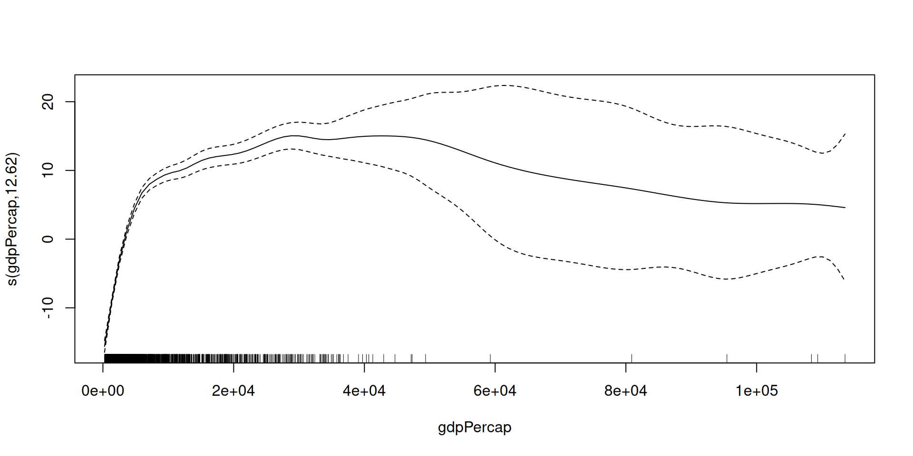
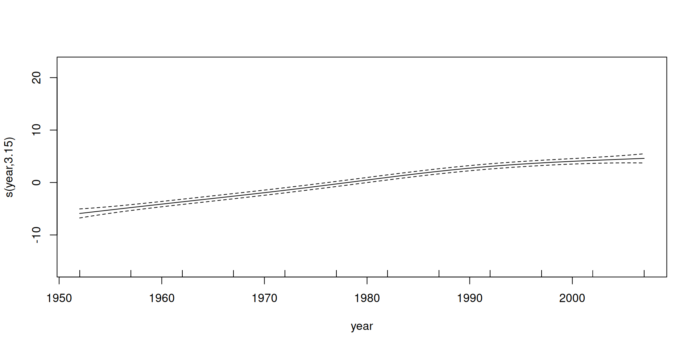
summary(mod)
Family: gaussian
Link function: identity
Formula:
lifeExp ~ s(gdpPercap, k = 30) + s(year, k = 10)
Parametric coefficients:
Estimate Std. Error t value Pr(>|t|)
(Intercept) 59.4744 0.1605 370.6 <2e-16 ***
---
Signif. codes: 0 '***' 0.001 '**' 0.01 '*' 0.05 '.' 0.1 ' ' 1
Approximate significance of smooth terms:
edf Ref.df F p-value
s(gdpPercap) 12.619 15.50 226.4 <2e-16 ***
s(year) 3.148 3.91 110.9 <2e-16 ***
---
Signif. codes: 0 '***' 0.001 '**' 0.01 '*' 0.05 '.' 0.1 ' ' 1
R-sq.(adj) = 0.737 Deviance explained = 73.9%
GCV = 44.315 Scale est. = 43.879 n = 1704mod2 <- gam(lifeExp ~ s(log(gdpPercap), k = 30) + s(year, k = 10), data = gapminder)
plot(mod2)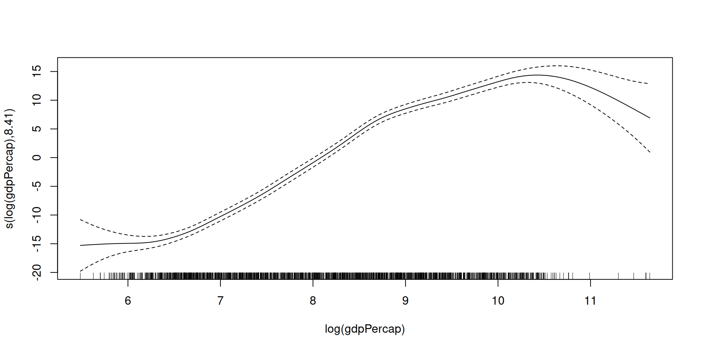
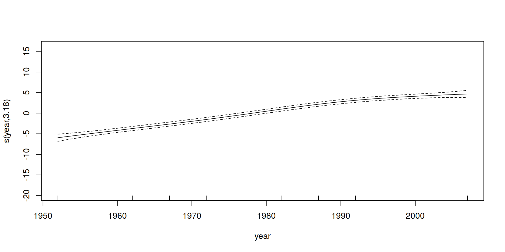
Building on that, we could use the same kind of functionality as in lm/glm in terms of factors and interactions.
How does GAM choose how much to smooth?
GAM uses the data to choose how much smoothing to do. Roughly one can think of what it is doing as carrying out cross-validation and choosing the best amount of smoothing for predicting held-out data, but without having to actually do cross-validation.
k simply sets an upper bound on the amount of smoothing (you can think of k as the number of degrees of freedom - “1” would be a linear fit).
- Make sure
kis less than the number of unique values of the predictor variable - The default for
kis relatively small and in some cases this may overly limit the smoothness of the curve.- You can try increasing
kand see if it improves the fit. - If
summaryreports anedfthat is close tokthat often suggests thatkshould be increased.
- You can try increasing
Distributions
Since R was developed by statisticians, it handles distributions and simulation seamlessly.
All commonly-used distributions have functions in R. Each distribution has a family of functions:
- d - probability density/mass function (PDF), e.g.
dnorm() - r - generate a random value, e.g.,
rnorm() - p - cumulative distribution function (CDF), e.g.,
pnorm() - q - quantile function (inverse CDF), e.g.,
qnorm()
Some of the distributions include the following (in the form of their random number generator function): rnorm(), runif(), rbinom(), rpois(), rbeta(), rgamma(), rt(), rchisq().
Distributions in action
pnorm(1.96)[1] 0.9750021qnorm(.975)[1] 1.959964dbinom(0:10, size = 10, prob = 0.3) [1] 0.0282475249 0.1210608210 0.2334744405 0.2668279320 0.2001209490
[6] 0.1029193452 0.0367569090 0.0090016920 0.0014467005 0.0001377810
[11] 0.0000059049dnorm(5)[1] 1.48672e-06dt(5, df = 1)[1] 0.01224269x <- seq(-5, 5, length = 100)
plot(x, dnorm(x), type = 'l')
lines(x, dt(x, df = 1), col = 'red')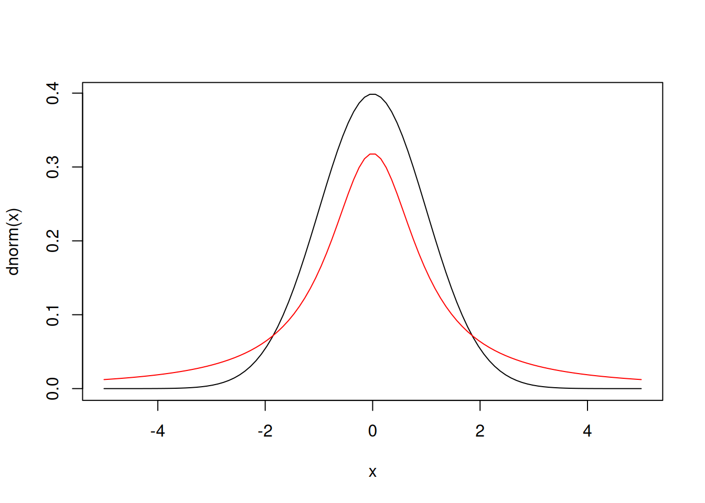
rmultinom(1, 100, prob = c(.1, .1, .2, .3, .25, .05)) [,1]
[1,] 9
[2,] 11
[3,] 24
[4,] 35
[5,] 18
[6,] 3x <- seq(0, 10, length = 100)
plot(x, dchisq(x, df = 1), type = 'l')
lines(x, dchisq(x, df = 2), col = 'red')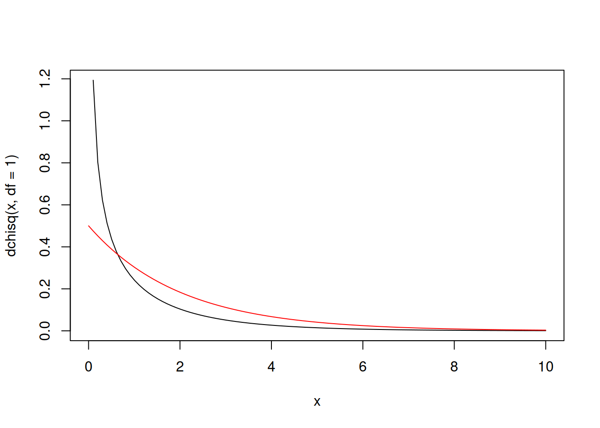
Sampling from a finite set
We can draw a sample with or without replacement.
sample(1:nrow(gapminder), 20, replace = FALSE) [1] 706 321 119 1516 67 1238 650 344 313 1614 120 141 717 620 40
[16] 459 1249 1352 977 259Here’s an example of some code that would be part of coding up a bootstrap. As I mentioned previously, this would be a weird dataset to do formal statistical inference on given it includes most of the countries in the world, though one could think about fitting models for the variation over time, treating short-term fluctuations as random.
# actual mean
mean(gapminder$lifeExp, na.rm = TRUE)[1] 59.47444# here's a bootstrap sample:
smp <- sample(seq_len(nrow(gapminder)), replace = TRUE)
mean(gapminder$lifeExp[smp], na.rm = TRUE)[1] 60.1616It’s a good idea to use seq_along() and seq_len() and not syntax like 1:length(gapminder) in sample() because the outcome of length() might in some cases be unexpected (e.g., if you’re taking subsets of a dataset). Similar reasoning holds when setting up for loops: e.g.,
for(i in seq_len(nrow(gapminder))) {
# blah
}The Random Seed
A few key facts about generating random numbers
- Random number generation is based on generating uniformly between 0 and 1 and then transforming to the kind of random number of interest: normal, categorical, etc.
- Random numbers on a computer are pseudo-random; they are generated deterministically from a very, very, very long sequence that repeats
- The seed determines where you are in that sequence
To replicate any work involving random numbers, make sure to set the seed first.
set.seed(1)
vals <- sample(1:nrow(gapminder), 10)
vals [1] 1017 679 129 930 1533 471 299 270 1211 1331vals <- sample(1:nrow(gapminder), 10)
vals [1] 597 1301 1518 330 1615 37 1129 729 878 485set.seed(1)
vals <- sample(1:nrow(gapminder), 15)
vals[1:10] [1] 1017 679 129 930 1533 471 299 270 1211 1331vals[11:15][1] 597 1301 1518 330 1615Optimization
R provides functionality for optimization - finding maxima or minima of a function.
A workhorse is optim(), which implements a number of optimization algorithms.
library(fields) banana <- function(x) { ## Rosenbrock Banana function
x1 <- x[1]
x2 <- x[2]
100 * (x2 - x1 * x1)^2 + (1 - x1)^2
}
x1s <- x2s <- seq(-5, 5, length = 100)
x <- expand.grid(x1s, x2s)
fx <- apply(x, 1, banana)
par(mfrow = c(1, 2), mai = c(.45, .4, .1, .4))
image.plot(x1s, x2s, matrix(fx, 100), xlab = '', ylab = '')
image.plot(x1s, x2s, matrix(log(fx), 100), xlab = '', ylab = '')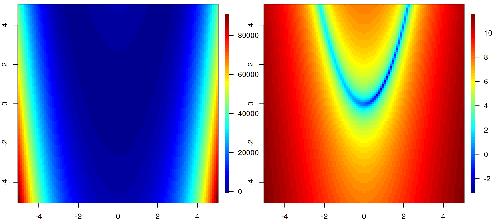
optim(c(-2,0), banana)$par
[1] 1.003369 1.006443
$value
[1] 2.079787e-05
$counts
function gradient
181 NA
$convergence
[1] 0
$message
NULLWe can see the progression of evaluations of the objective function:
banana <- function(x) { ## Rosenbrock Banana function
points(x[1],x[2])
Sys.sleep(.03)
x1 <- x[1]
x2 <- x[2]
100 * (x2 - x1 * x1)^2 + (1 - x1)^2
}
par(mfrow = c(1, 1), mai = c(.45, .4, .1, .4))
image.plot(x1s, x2s, matrix(log(fx), 100), xlab = '', ylab = '')
optim(c(-2,0), banana)Dates and Times
Dates
R has built-in functionality to handle dates (don’t reinvent the wheel!).
date1 <- as.Date("03-01-2011", format = "%m-%d-%Y")
date2 <- as.Date("03/02/11", format = "%m/%d/%y")
date3 <- as.Date("07-May-11", format = "%d-%b-%y")
date1; date2[1] "2011-03-01"[1] "2011-03-02"class(date1)[1] "Date"dates <- c(date1, date2, date3)
weekdays(dates)[1] "Tuesday" "Wednesday" "Saturday" dates + 30[1] "2011-03-31" "2011-04-01" "2011-06-06"date3 - date2Time difference of 66 daysunclass(dates)[1] 15034 15035 15101The “origin” date in R is January 1, 1970
Time
library(chron)
d1 <- chron("12/25/2004", "10:37:59")
# default format of m/d/Y and h:m:s
d2 <- chron("12/26/2004", "11:37:59")
class(d1)[1] "chron" "dates" "times"d1[1] (12/25/04 10:37:59)d1 + 33[1] (01/27/05 10:37:59)d2 - d1Time in days:
[1] 1.041667d1 + d2 # This won't work.Error in Ops.dates(d1, d2): chron objects may not be added togetherThere’s lots more packages/functionality for dates/times: see lubridate (from the tidyverse) and ?DateTimeClasses
Breakout
Basics
Generate 100 random Poisson values with a population mean of 5. How close is the mean of those 100 values to the value of 5?
What is the 95th percentile of a chi-square distribution with 1 degree of freedom?
What’s the probability of getting a value greater than 5 if you draw from a standard normal distribution? What about a t distribution with 1 degree of freedom?
Using the ideas
Fit two linear regression models from the gapminder data, where the outcome is
lifeExpand the explanatory variables arelog(pop),log(gdpPercap), andyear. In one model, treatyearas a numeric variable. In the other, factorize theyearvariable. How do you interpret each model?Consider the code where we used
sample(). Initialize a storage vector of 500 zeroes. Set up a bootstrap using a for loop, with 500 bootstrap datasets. Here are the steps within each iteration:
- resample with replacement a new dataset of the same size as the actual
gapminderdataset - assign the value of the mean of the life expectancy for the bootstrap dataset into the storage vector
- repeat
Now plot a histogram of the 500 values - this is an estimate of the sampling distribution of the sample mean.
- Modify the GAMs of lifeExp on gdpPercap and set
kto a variety of values and see how the estimated relationships change. What about the estimated uncertainties?
Advanced
Fit a logistic regression model where the outcome is whether
lifeExpis greater than or less than 60 years, exploring the use of different predictors.Suppose you wanted to do 10-fold cross-validation for some sort of regression model fit to the gapminder dataset. Write some R code that produces a field in the dataset that indicates which fold each observation is in. Ensure each of the folds has an equal (or as nearly equal as possible if the number of observations is not divisible by 10) number of observations. Hint: consider the times argument to the
rep()function. (If you’re not familiar with 10-fold cross-validation, it requires one to divide the dataset into 10 subsets of approximately equal size.)Write some code to demonstrate the central limit theorem. Generate many different replicates of samples of size
nfrom a skewed or discrete distribution and show that ifnis big enough, the distribution of the means (of each sample of sizen) looks approximately normal in a histogram. Do it without any looping (using techniques from earlier modules)! I.e., I want you to show that if you have a large number (say 10,000) of means, each mean being the mean ofnvalues from a distribution, the distribution of the means looks approximately normal ifnis sufficiently big.